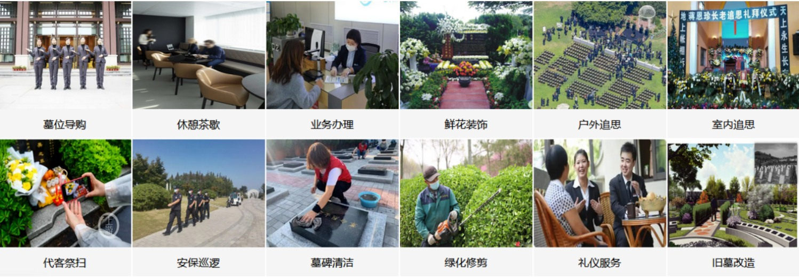

服务项目
-
自建园以来，燃灯寺公墓始终把客户的服务作为树立、巩固和延伸企业品牌的重中之重。“让客户享受服务”的全新理念不仅独辟蹊径，更在行业中率先垂范，形成了倍加温馨、舒适和亲切的人性化服务氛围。 中国人讲究落叶归根，由于时代的变化，人们虽身在他乡，但心依然与故乡紧密相连。每逢佳节都是人们思乡思亲之时，燃灯寺公墓代客祭扫团队将为身在他乡或因其它原因无法前来的您搭建起这座思乡思亲的情感桥梁。

习俗流程
-
习俗先辈云：“习俗移人，贤智者不免。”今一衣一帽、一器一物、一字一语，种种所作所为，凡唱自一人，群起而随之，谓之“时尚”。或尚坐关，群起而坐关；或尚礼忏，群起而礼忏；群起而背经，群起而持准提，群起而读等韵，群起而去注疏、专白文，群起而斋十万八千僧，群起而学书、学诗、学士大夫尺牍语，靡然成风，不约而合。
丧葬习俗流传至今，已经有几千年历史。世界各个民族都有自己的丧葬习俗。虽然丧葬品准备及丧葬程序不断减化，但是主要内容并没有太大变化，并且流传至今。丧葬文化，也是中华民族，几千年文化文明史中的一部分，它涵盖了儒家、道家、佛家、三大教派的思想理念。大朗福满园可根据客户的不同需求，为客户提供全方位贴心的丧葬流程。
安放流程（安放客户用）
亲爱的顾客：
燃灯寺公墓推崇文明治丧，为给您逝去的亲友创造安详静谧的憩所，我们特为您设计了一套简约缜密的安放流程，既表达您的思念，又体现对逝者的尊重。
一、手续办理
1、请务必提前一周通知我们安放时间，以便我们做好准备。
2、安放当天请务必带上购墓合同、交款票据和亲人火化证明到燃灯寺公墓办公室办理安放手续，领取“骨灰安葬证书”后，方可开始安放工作。您的手续若不完善，将会耽误安放时间，给您带来的不便敬请谅解。
二、安放流程
1、净穴：请逝者直系家属代表用毛巾擦拭内穴；
2、祈福：请逝者直系家属将左手放在灵盒上停留一分钟；
3、安放灵盒和随葬品：直系家属代表（一般为长子或长女）落实：
（1）将家业永固常青座放置在“金玉满堂防潮地宫”或墓穴底部，祝福家人家业永固基业常青；
（2）将超度莲花床放置在家业永固常青座上，让亲人高升极乐；
（3）将“铺金盖银”中的金被垫放在超度莲花床上，然后取下灵盒红绸，按照方位安放好灵盒，在灵盒顶部盖上“铺金盖银”中的银被，祝福家人荣华富贵，前辈铺金、后辈得福。
（4）在银被上放置七星指路板，让亲人荣享七星引路，魂归北斗；放置招财玉貔貅，让亲人随遇而安，祝福家人平安幸福；
（5）在灵盒后面放镇墓图,让亲人永享安宁，祝福家人家宅清宁；
（6）在灵盒左右两侧放入福荫土，让亲人蒙天眷顾，祝福家人福荫绵长；
（7）在灵盒周围或银被上方放聚宝盆、祝福后人财源滚滚、生生不息；放八方来财，祝福家人和所有来宾行四方路，来八方财；放马上封侯，祝福后人晋升成为人中龙凤、行业翘楚；
（8）在灵盒前面或两侧放入吉祥如意玉象，祝福家人事业亨通、平安吉祥；
（9）在灵盒四周撒入硬币。
5、瞻仰骨灰；请所有亲友依次来看亲人最后一眼。
6、封盖：通知安放工人封墓盖，鸣放皇家升天礼炮；安放工人封墓清扫后，由逝者亲友再次清理墓位。
7、家祭：摆放水果、糕点等贡品、电子香蜡、鲜花。
三、注意事项
1、灵盒及陪葬品的大小，请参照购墓合同上标注的墓穴尺寸确定；
2、塑料纸上的花纹会印在花岗石上，为保持整洁，请选择外层为纸包装的鲜花或将鲜花包装取下后再摆放。
3、祭拜时用的水果等，建议在安放完成后由逝者亲友一并带走，以添福添寿。
4、为保证安放的庄重，请告知亲属着装庄重，不要带宠物进入墓区。如果带了宠物到园区，请不要参加礼仪、追思、灵盒接引仪式。安放现场不得高声喧哗，不可踩踏、依靠四周墓位。
燃灯寺公墓愿与您一起，为逝者创造静雅清幽的长眠之所。
感谢您对我们工作的支持与配合！
购墓须知
-
购墓规定：
1. 墓穴土地所有权属国家所有，客户拥有墓穴使用权，但无权转让。
2. 墓穴石箱内径为35㎝×25㎝×20㎝，保护箱内径为31㎝×21㎝×19㎝，客户提供的骨灰盒应小于保护箱内径，如客户提供的骨灰盒为特殊规格，请在选购墓穴时与业务室说明并商定，否则，无法及时落葬，本园不承担责任。
3. 已认购的墓穴，如退购，按市殡葬处有关规定，本园将收取墓穴总价的5%作为退购手续费；碑文字样已刻写好的，按实际价格原价收费，不予退还；已落葬的墓穴，不予办理退购手续，将视为客户自行放弃。
4. 建墓石材一律由本园备料，已建好的墓穴，客户不得私自改建。
5. 客户认购墓穴须一个月内付清全款；如提前落葬，须在落葬前付清全款，本园发放墓穴证书，凭证落葬。
6. 墓穴维护费从下葬之日起计算，购买墓穴时须预付五年维护费。客户支付墓穴维护费，本园负责清扫墓地，绿化管理工作。凡客户违反规定，在墓穴上私自安装附件、放置贵重物品等，如有遗失或损坏，本园概不负责。
7. 本园设有骨灰寄存室，客户认购墓穴后，可免费寄存骨灰一年。超过一年的，将按照本园规定收取费用。
8. 如需办理碑文刻字、瓷像制作、老墓改建等业务，请带好墓穴证书及购墓凭证，提前至少六十天到业务室办理。
9. 骨灰落葬完毕，视为客户对墓穴工程质量验收合格，对于双穴或多穴的墓穴工程质量的最终验收合格，以第一次骨灰落葬完毕为准。
10. 本园禁止燃放鞭炮，否则，危及他人人身安全，由客户方承担责任；禁止燃烧纸制品，特殊原因请借桶，否则，损坏自己和他人墓穴，由客户方承担责任。
11. 本园内相关价格如有调整，恕不另行通知，请以本园业务部提供的最新资料为准。
购墓所需材料
-
购墓所需材料：
购墓（已故）
单穴：1. 已故人的《遗体火化证明》原件；
2.认购人身份证原件；
3.已故使用人的清晰照片（要求原照，证件照、生活照均可）；
4.首次预付墓价30%的预付款（刷卡、现金、支付宝、微信），尾款落葬前付清/1个月内付清。
双穴：1. 已故人的《遗体火化证明》原件；
2. 购买双穴墓的话，健在的使用人户口簿；
3. 认购人身份证原件；
4. 已故使用人的清晰照片（要求原照，证件照、生活照均可）；
5. 首次预付墓价30%的预付款（刷卡、现金均可,支付宝、微信），尾款落葬前付清/1个月内付清。
寿穴：使用人（之一）满80周岁：
1. 使用人身份证原件，使用人（其中一人）身份证上的年龄满80周岁；
2. 使用人的户口簿原件；
3. 认购人身份证原件；
4. 首次预付墓价30%的预付款（刷卡、现金、支付宝、微信），尾款1个月内付清。
使用人（之一）身患绝症：
1.病史、出院小结；
2. 使用人的户口簿原件；
3. 认购人身份证原件；
4. 首次预付墓价30%的预付款（刷卡、现金、支付宝、微信），尾款1个月内付清。